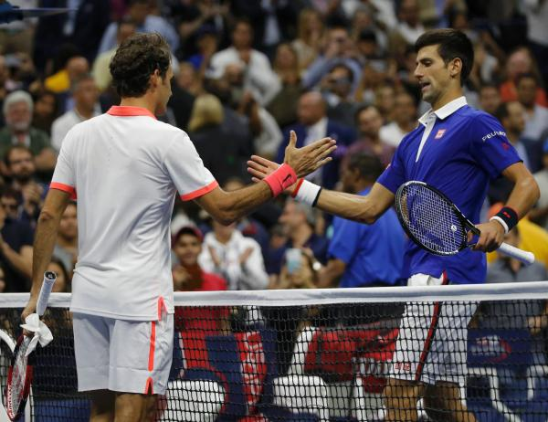
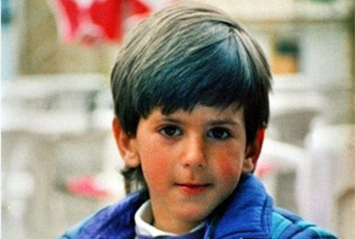
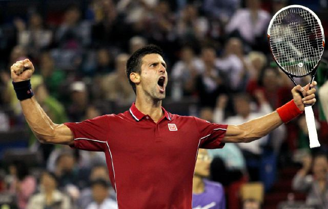
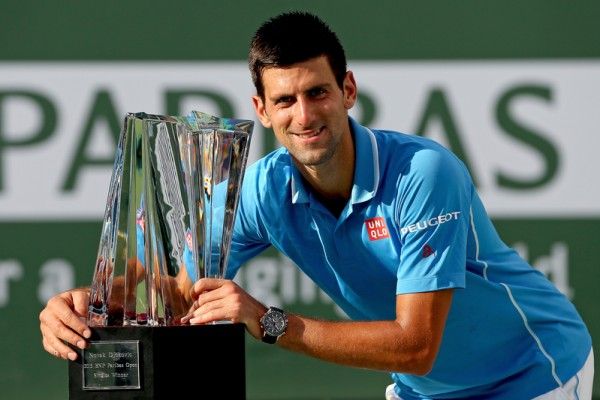
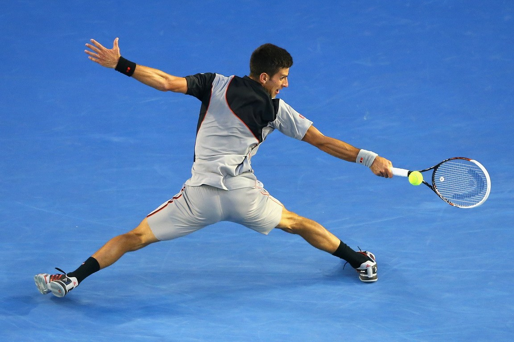
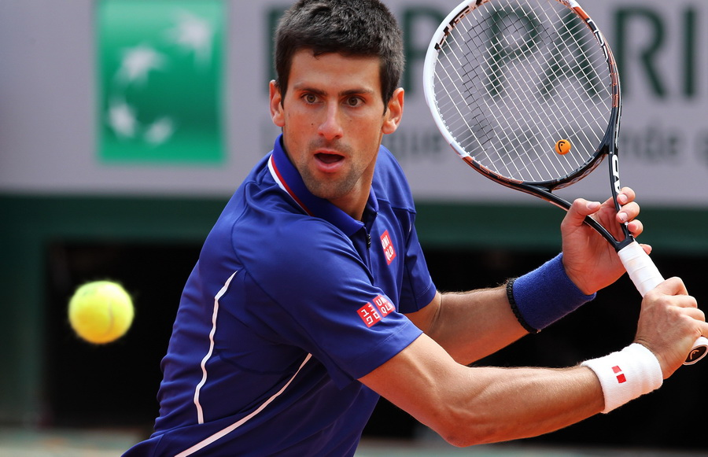
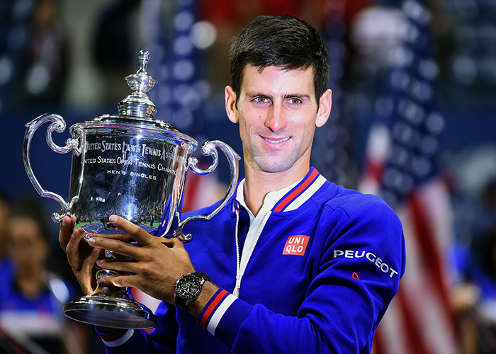

德约科维奇
诺瓦克·德约科维奇（塞尔维亚语：Новак Ђоковић，Novak Đoković，1987年5月22日－），生于南斯拉夫联邦首都贝尔格莱德的塞尔维亚男子网球运动员，十一届大满贯冠军得主，也是现任单打排名世界第一的男子球员。
诺瓦克·德约科维奇（塞尔维亚语：Новак Ђоковић，Novak Đoković，1987年5月22日－），生于南斯拉夫联邦首都贝尔格莱德的塞尔维亚男子网球运动员，十一届大满贯冠军得主，也是现任单打排名世界第一的男子球员。
2008年澳大利亚网球公开赛，德约科维奇于半决赛中直落三盘击败费德勒，随后在决赛中力克赛会黑马特松加，获得职业生涯第一座网球男子单打大满贯冠军，成为塞尔维亚首位大满贯冠军得主。2008年北京奥运会男子单打半决赛中他惜败于最终的金牌得主拉斐尔·纳达尔，但他在季军战击败美国球员詹姆斯·布莱克夺得铜牌。
2011年的德约科维奇是男子网球史上最佳单人单打单赛季之一：这一年的德约科维奇拿下四大满贯赛事中的澳州网球公开赛、温布尔登网球锦标赛和美国网球公开赛三个冠军，随后于七月份首次登上世界第一，成为塞尔维亚网球史上第一位顶尖级别的男子球员。另外，2011年上半年连胜41场比赛，连续在七站赛事赢得冠军。全年胜率高达92.1%（70胜6负）；单赛季创纪录囊括五项大师赛冠军。

2013年1月27日，澳大利亚网球公开赛决赛，德约科维奇击败穆雷，第四次获得澳网冠军，成为1968年网球公开赛年代以来，第一个能在澳网三连冠的球员，并且以澳网四冠王追平阿加西、费德勒的记录，并列网球史上第一。2014年7月6日，温布尔登网球锦标赛，德约科维奇击败罗杰·费德勒，第二次获得温网冠军。截至2015年9月，德约科维奇获得10个大满贯男单冠军、4个年终总决赛（或年终大师杯）冠军、24个1000大师赛冠军，加上其他级别冠军总计55个。2015年2月1日，德约科维奇击败穆雷，第五次夺得澳网冠军，成为公开赛年代夺得澳网次数最多的球员。2015年7月12日，德约克维奇击败罗杰·费德勒，继2011、2014第三次摘下温网冠军，成功追平自己的教练鲍里斯·贝克(1985、1986、1989温网冠军)的纪录。2015年9月13日，德约克维奇击败罗杰·费德勒，继2011后第二次摘下美网冠军，个人大满贯冠军次数来到双位数的10座。2016年1月31日,德约科维奇在澳网决赛第四度击败穆雷,拿下澳网第六座冠军,成功追平澳大利亚名将爱默生（Roy Emerson）,成为拿下澳网单打最多冠军的选手,也夺得生涯第11座大满贯单打冠军,将大满贯单打冠军数追到史上第五。德约科维奇与同时代的另三位选手罗杰·费德勒、拉斐尔·纳达尔与安迪·穆雷，他分别与这三位选手之间的较量被誉为是网球史上的黄金年代，因此他们四人被大众传播媒体尊称为“网坛四巨头”，他们创下无数的经典战役，由此也产生灿若繁星的网坛之最。
家庭

德约科维奇1987年5月22日生于南斯拉夫首都贝尔格莱德市，其父母生了三个儿子，他是其中最大的，他有两个弟弟马可·德约科维奇和乔杰·德约科维奇。他的女朋友是耶莱娜·里斯蒂奇，两人的恋情从2005年至今，2013年订婚，2014年4月22日德约科维奇在推特上亲自宣布里斯蒂奇已怀孕。7月中旬，德约科维奇与交往9年的里斯蒂奇在黑山的圣斯特凡岛举行婚礼。2014年10月22日，德约科维奇的儿子出生。
个人特点
德约科维奇虽然是塞尔维亚人，但目前居住在摩纳哥的蒙特卡洛。除了本国的塞尔维亚语之外，他还精通英语、德语、意大利语和法语，是个语言天赋极高的运动员，而在中网期间，德约科维奇也经常在镜头写起汉字和秀出简短的中文。
德约科维奇笃信塞尔维亚东正教，2011年4月28日，德约科维奇被塞尔维亚正教会授予最高级别的勋章，以表彰他对教会的热爱和对塞尔维亚人民的帮助和贡献。德约科维奇身上也戴着象征教会的十字架，在比赛的过程中，经常会拿出来亲吻和祈祷。另外，德约科维奇是一个非常热爱自己国家的人，德约科维奇的装备经常是由塞尔维亚国旗的三颜色红、白、蓝组成，鞋子也印有塞尔维亚国旗和国徽标志。
德约科维奇本人是贝尔格莱德红星足球俱乐部、AC米兰和葡萄牙里斯本与本菲卡体育俱乐部的球迷。因此在没有比赛的时候，德约科维奇经常会和这些足球运动员踢球。另外，他和安娜·伊万诺维奇也是从小一起长大的好朋友，两人曾经在2013年搭档打过霍普曼杯，而伊万诺维奇也曾经出现在德约科维奇的球员包厢中为其加油。
德约科维奇以幽默的性格闻名网坛，个性友好的他在网球轮、足球轮和其他运动项目都有很多朋友。他也善于模仿其他球员，2007年美网期间，他曾模仿过纳达尔和莎拉波娃的发球动作，2008年澳网期间再次模仿莎拉波娃，从而带起了一股网坛互相模仿的风潮。
慈善事业
德约科维奇于2007年成立了个人基金会，名为“诺瓦克·德约科维奇基金会”。主要致力于帮助儿童健康成长以及儿童的学前教育。德约科维奇曾经说过自己成长于一个战火纷飞的国度，因此周遭的小孩并不敢奢望梦想什么。希望能通过一己之力帮助需要帮助的人。另外，他本人也是联合国儿童基金会大使。
2014年罗马大师赛期间，塞尔维亚和波斯尼亚发生欧洲近几十年来最大的洪灾，德约科维奇及其团队在场上打出了“支持塞尔维亚和波斯尼亚”的横幅，期望外界给与这两个国家援助。而乔本人在罗马夺冠所获得的奖金也悉数捐给了祖国灾区，旗下的“诺瓦克·德约科维奇基金会” 也启动了援助机制。
自传
2013年，德约科维奇出版了个人第一本自传书“Serve to win”（中国大陆译为《德约科维奇：一发致胜-我的14天身心逆转计划》，台湾译为《德约科维奇身心健康书-14天逆转胜营养计划》）。全书介绍了德约科维奇童年与职业生涯的生活,但全书主要介绍他的个人饮食计划。全书内容分为序章、正文八章、后记和附录，目前已经被翻译成多个语言版本。
早年
作为前南斯拉夫国家队的一员，德约科维奇不到14岁的时候就代表国家打进青少年戴维斯杯的决赛。整个青少年时期，德约科维奇在单打比赛中取得了40胜11负的战绩，双打为23胜6负。在2004年2月的时候，个人最高排名来到青少组的24名。
2003年，德约科维奇正式转为职业球员，转职业前期，他主要参加未来赛和ATP挑战赛，2003年到2005年之间拿了三个冠军。正式参加ATP世界巡回赛是在克罗地亚乌马格举行的比赛。
德约科维奇第一次出现在大满贯赛场是在2005年澳大利亚网球公开赛中，当时以资格赛选手的身份打进正赛，但随即在首轮不敌后来的冠军马拉特·萨芬。在接下来的温布尔登网球锦标赛和美国网球公开赛中都打进了第三轮。这一年他参加了四站大师赛，两站打进正赛，最好的成绩是在巴黎大师赛打进正赛第三轮。
2006年：快速上升期

德约科维奇年初单打排名为78名，不过在连续两个大满贯系列赛有所表现，法国公开赛打入八强，温布尔登锦标赛打入第四轮，亮眼的大满贯表现，使得他的排名创下个人新高，来到了世界第40名。
7月，在温布尔登过了三周后，他参加鹿特丹公开赛（Rotterdam Open），整站比赛未失一盘，在决赛击败2004年雅典奥运会单打金牌得主尼古拉斯·马苏，获得个人首个ATP巡回赛赛事单打冠军。随后在法国梅斯拿到了职业生涯第二座冠军，个人排名来到世界前20名。除此之外，德约科维奇在2006年马德里大师赛（2006 Madrid Masters）打进八强，也是其第一次打进大师赛系列的八强。
该年度美国公开赛，德约科维奇打入第三轮，三盘败于前世界第一莱顿·休伊特。但在随后的戴维斯杯中，德约科维奇代表塞尔维亚和黑山打败英国队，从而带领塞黑顺利进入欧非世界组。随后，有一段时间外界以为德约科维奇将要代表英国队比赛，英国媒体报道德约科维奇的团队曾经和英国国家网协交流过，德约科维奇要放弃塞黑国籍加入英国国籍。当时19岁的德约科维奇排名世界第62名，立即否认了这个事实，认为新闻报道所说的谈判并不存在，只是轻描淡写为：“自从戴维斯杯之后，英国人就对我们表现的非常友善。”然而，三年之后，2009的10月，德约科维奇承认当年他的团队和父母确实和英国网协的交流过，但事情发生在2006年的4月到5月之间。德约科维奇说：
英国方面给我提供了很多机会，而且由于英国国内当时只有穆雷能打出成绩，所以需要更多的好手加入到他们当中。虽然他们提供了丰厚的资金，但是最后还是失望了。我并不需要那些钱，因为我可以（通过比赛）自己赚到，并且有能力能够请教练、组建自己的团队。当时我说：“这是什么意思？”，我是塞尔维亚人，也为塞尔维亚人感到骄傲，我不会因为别的国家有更好的环境，或是提供更好的条件而改变自己的国籍。如果我不得已要为英国出战，我当然会尽我能力为这个国家打球，但实际上，在内心里面，我不会感到有归属感。于是我就做出了这个决定（指没有加入英国国籍）。
2007年：第一个大满贯决赛
德约科维奇2007年赛季第一站比赛为阿德莱德公开赛，并在此地夺得生涯单打第三冠。之后职业生涯第三次参加澳大利亚网球公开赛，但在第四轮遭到正值巅峰的世界第一与卫冕冠军费德勒直落三盘淘汰出局。
3月份，北美春季硬地赛季的印第安维尔斯大师赛与迈阿密大师赛，德约科维奇表现不俗，各取得亚军与冠军的成绩，印第安维尔斯大师赛决赛败给世界第二纳达尔获得亚军，接着迈阿密大师赛决赛击败吉列尔莫·卡纳斯，获得第一个ATP大师系列赛事冠军，也是生涯单打第四冠，这使他进入世界前十。在赢得职业生涯第一个大师赛冠军之后，德约科维奇返回塞尔维亚，并带领塞尔维亚队打进戴维斯杯世界组。
进入红土赛季，蒙特卡洛大师赛止步第三轮。在葡萄牙公开赛中决赛击败法国好手加斯奎特夺得单打第五冠。接着罗马大师赛与汉堡大师赛，德约科维奇在晋级过程中，分别被纳达尔和卡洛斯·莫亚淘汰。法国公开赛首度打入四强，创造了个人职业生涯最佳的大满贯记录。但是结果仍与上届一样，再度被卫冕冠军纳达尔所击败。之后来到温布尔登锦标赛，在八强的比赛中五盘大战击败获得去年澳网亚军的马科斯·巴格达蒂斯，一路闯进四强，创造了个人职业生涯最佳温网战绩，再次与纳达尔交手。但在比赛中，德约科维奇由于手肘受伤，在先赢一盘连输两盘的情况下退赛，无缘职业生涯首个大满贯决赛。
美网系列赛，德约科维奇于加拿大大师赛中分别击败世界前三好手，八强击败世界第三罗迪克，四强击败世界第二纳达尔，决赛击败世界第一费德勒，夺得第二个ATP大师系列赛冠军，也是生涯单打第六冠，成为继1994年鲍里斯·贝克之后，能在同一站比赛中击败世界前三的球员。也是继托马什·伯蒂奇之后，第二位同时击败费德勒和纳达尔的球员。这场比赛之后，前世界第一比约恩·博格就断言，德约科维奇将是大满贯冠军的有力竞争者，未来也将会夺得大满贯冠军。然而在辛辛那提大师赛中，德约科维奇在第二轮被前世界第一卡洛斯·莫亚直落二盘淘汰。但是这并没有影响到德约科维奇在美网的发挥，美国公开赛，德约科维奇首度打入大满贯决赛，虽然在前两盘中拿到多个盘末点，但经验不足的他一一被卫冕冠军费德勒所化解并遭到逆转。最终以64–7、62–7、4–6直落三盘败给费德勒。

10月份，德约科维奇在奥地利维也纳公开赛夺得本赛季第五冠，也是职业生涯单打第七冠，于决赛中击败斯坦尼斯拉斯·瓦夫林卡。随后在马德里大师赛中打入四强，最后不敌阿根廷球员大卫·纳尔班迪安。此战过后，德约科维奇的排名再创新高，来到了世界第三，成为年终大师杯的八个球员之一，但在小组赛中即被淘汰。随后，他获得了塞尔维亚颁发的国家最佳运动员头衔。
年末德约科维奇代表塞尔维亚国家队打败澳大利亚队，顺利打进2008年戴维斯杯世界组。2008年年初与俄罗斯队的第一轮比赛中，突然遭受流行性感冒侵袭，不得不退出单打项目的比赛，但之后搭档队友内纳德·齐莫尼奇进行了双打比赛。
2008年：首夺大满贯冠军
澳大利亚网球公开赛，德约科维奇在四强直落三盘击败三届赛会冠军罗杰·费德勒，中断费德勒连续十次大满贯决赛的纪录。也成为继古斯塔沃·库尔滕于2004年法国网球公开赛之后，第一位在大满贯赛事直落三盘击败费德勒的人。至此，德约科维奇成为新生代中第一个在四大满贯全部打进四强的球员，也成为公开化年代以来打进四大满贯最年轻的球员。在决赛中与法国黑马若-威尔弗里德·特松加交手，在先失第一盘的情况下，倒赶三盘击败特松加，以4–6、6–4、6–3、7–62夺得第一座大满贯赛事冠军，亦是个人ATP单打第八冠。这也标志着从2005年澳网开始，第一个不是由费德勒或纳达尔夺得的大满贯冠军。
之后于迪拜网球锦标赛四强的比赛中被最后的冠军安迪·罗迪克淘汰出局。随后在印第安维尔斯大师赛决赛中击败美国选手马尔迪·费什，获得第三个ATP大师系列赛冠军，个人生涯单打第九冠。
4、5月红土赛季，蒙特卡洛大师赛，在四强与费德勒交手，后来在比赛过程中退出比赛。罗马大师赛，在决赛中击败斯坦尼斯拉斯·瓦夫林卡，获得个人第四个ATP大师系列赛冠军，职业生涯第十冠。汉堡大师赛，在四强中与拉斐尔·纳达尔交手，三盘不敌对手被淘汰出局。之后角逐法国网球公开赛，德约科维奇列为第三种子，在四强中再度与三届卫冕冠军纳达尔交手，虽然曾在第三盘逼入抢七，结果与上届一样，被对手以直落三盘击败，无缘晋级决赛。
6月份草地赛事，德约科维奇参加了温网前热身赛女王杯（Queen's Club Championships），一路打进决赛，但在决赛中第三度与纳达尔交手，再度败给纳达尔，获得亚军。温布尔登网球锦标赛，德约科维奇为第三种子，第二轮德约科维奇被前世界第一马拉特·萨芬淘汰出局。至此，连续五次大满贯四强遭到终止。
美网系列赛，德约科维奇在加拿大大师赛八强的比赛中被八号种子安迪·穆雷淘汰，卫冕失利。隔周的辛辛那提大师赛，他在四强中击败纳达尔，终止了后者的32连胜，不过决赛再度被穆雷击败。8月，德约科维奇第一次参加奥运会，于北京奥运会单打比赛中，德约科维奇在四强三盘不敌后来夺得金牌的纳达尔，不过在铜牌争夺战中，直落两盘击败美国选手詹姆斯·布莱克，夺得铜牌。双打比赛中，德约科维奇与同胞泽蒙季奇搭挡，不过止步于第一轮。
奥运会过后，德约科维奇以三号种子的身份参加美国公开赛，于第四轮击败大卫·费雷尔，八强击败安迪·罗迪克，顺利闯进四强，不过赛后于媒体采访的时候，德约科维奇批评罗迪克借用滥用手段，借训练师之手干扰比赛，表示罗迪克的行径相当过分。不过四强赛中再次遭遇四届冠军费德勒，重演去年决赛的对决阵容，虽然拿下一盘，但最终以1比3不敌费德勒无缘决赛。
11月，德约科维奇以二号种子的身份第二次参加年终大师杯，由于纳达尔退赛，在小组赛中击败尼古莱·达维登科与胡安·马丁·德尔波特罗，虽然败给特松加，但仍顺利晋级四强。在四强中德约科维奇击败吉勒·西蒙，在决赛中以6–1、7–5再次击败达维登科，夺得首座大师杯冠军，也是个人ATP单打第11冠。
2009年：五进大师赛决赛与跻身四巨头
本赛季德约科维奇从布里斯班国际赛开始，但随即首战出局。隔周的悉尼国际赛，于四强中败于芬兰球员亚尔科·涅米宁。作为卫冕冠军，德约科维奇带着不佳的热身赛成绩来到墨尔本公园，以三号种子的身份参加澳大利亚网球公开赛，但在四分之一决赛与安迪·罗迪克的比赛中因为中暑退赛，不但卫冕失利而且损失巨额积分。之后在迪拜网球锦标赛决赛击败西班牙球员大卫·费雷尔，获得生涯单打第12冠。一周之后，德约科维奇参加印第安维尔斯大师赛，但在八强的比赛中再度败于安迪·罗迪克，卫冕失败。随后转战迈阿密大师赛，虽然在四强中击败费德勒，但在决赛中却败于安迪·穆雷。至上赛季到此战，德约科维奇已经连续三次败给安迪·穆雷。
进入红土赛季，德约科维奇首度闯进蒙特卡洛大师赛决赛，但再次败给拉斐尔·纳达尔。罗马大师赛，以卫冕身份参赛，在四强再度击败费德勒，但决赛再度败于纳达尔，卫冕失败，至此，德约科维奇在红土的比赛中，从来没有赢过纳达尔。此次失利造成德约科维奇的世界排名下滑第四，结束连续81周的世界第三排名。5月份参加在自己国家举办的塞尔维亚网球公开赛，德约科维奇为头号种子并最终夺得职业生涯单打第13冠。接着参加马德里大师赛，德约科维奇在四强再次与纳达尔交手，但最终以3–6、7–65、7–69再一次负于纳达尔，这场比赛耗时四个小时。也是网球巡回赛公开化年代以来，比赛时间最长的三盘两胜制的比赛。法国网球公开赛，德约科维奇意外的被德国球员菲利普·科尔施赖伯爆冷淘汰，止步第三轮，在2006年到2008年之间连续三年打进大满贯八强的记录也遭到终止。6月的草地赛季，德约科维奇以头号种子的身份参加哈勒公开赛，但决赛不敌德国球员托米·哈斯。随即的温布尔登网球锦标赛，德约科维奇在八强中再次败给哈斯。
美网系列赛，德约科维奇于加拿大大师赛四分之一决赛中第三度与罗迪克交手，两盘败于对方，自澳网开始三连败于罗迪克，止步于八强。而在辛辛那提大师赛，与三号种子纳达尔交手，最终两盘击败对手晋级决赛，这是他连续二年晋级决赛，决赛与重登世界第一的费德勒交手，结果遭到对手直落两盘击败，苦吞该年第五个亚军。
美国网球公开赛，德约科维奇为第四种子，第四轮赛事轻松击败拉德克·斯泰潘内克后，被大会司仪要求上演了一段模仿约翰·麦肯罗的模仿秀，德约科维奇模仿麦肯罗的火爆脾气和其标志性的截击，以及麦肯罗的口头禅“你不是认真的吧！”（You cannot be serious!），结果引得在场观众一片起哄和掌声，作为2009年美网大会的嘉宾评述员的麦肯罗也突然从评述台上走进球场和年轻的德约科维奇切磋球技，把气氛推至高潮。八强与该年度澳网闯进四强的黑马费尔南多·沃达斯科苦战四盘逆转打进四强，这是他自2007年闯进美网决赛以来连续三年进入四强，不过仍在四强中遭遇世界第一费德勒，结果还是与前两届一样，被费德勒以直落三的比分击败。
10月份的中国公开赛，德约科维奇为赛会二号种子，在晋级决赛过程中，决赛与克罗地亚的马林·西利奇交手，结果以直落二盘击败对手，夺得该年度第三个冠军，也是其职业生涯单打第14冠。随后于上海大师赛的四强比赛中不敌上届亚军尼古莱·达维登科。而后在大卫杜夫瑞士室内赛决赛中三盘比力克世界第一费德勒，夺得本赛季第四个冠军，亦是个人生涯第15个冠军。年度最后一站大师赛巴黎大师赛，德约科维奇于半决赛中击败老对手纳达尔，决赛苦战三盘打败地主球员加埃尔·孟菲尔斯，夺得本赛季第一个ATP大师赛单打冠军，也是今年第五个冠军，亦是个人生涯第16个单打冠军。年度最后一项赛事年终总决赛，德约科维奇作为卫冕冠军，小组赛打败达维登科，之后打败纳达尔，但最后一场比赛不敌罗宾·索德林，综合排名之后以小组第三的成绩无法晋级四强。
德约科维奇该年度十次闯进决赛，五次获得亚军，均为1000级别的大师赛，而获得的五个亚军为500或以下级别的比赛。全年德约科维奇共打了97场比赛，78胜19负，是所有男子球员当中胜赛数最高的球员。最终连续三年年终排名第三结束整个赛季。
2010年：低潮期与首夺戴维斯杯冠军
该年度是德约科维奇自2007年以来，在巡回赛上表现最差的一年，全年没有打进过大师赛决赛。在全年赛事中四闯决赛，获得了两个冠军。于年度最后一项大满贯赛事美国网球公开赛中再次打进决赛，但最终不敌纳达尔，第二度获得美网亚军。
于年初的澳大利亚网球公开赛，德约科维奇晋级八强后，与若-威尔弗里德·特松加交手，重现08年决赛对决阵容，前三盘本以盘数2–1领先，但是在第四盘时因胃痛而遭到对手逆转止步八强。由于卫冕冠军拉斐尔·纳达尔四分之一决赛中因伤退赛，而安迪·穆雷在决赛败给世界第一罗杰·费德勒获得亚军，德约科维奇的世界排名确定在澳大利亚公开赛后会上升为世界第二。2月，德约科维奇参加鹿特丹公开赛（Rotterdam Open），在四强意外遭到俄罗斯球员米哈伊尔·尤日尼淘汰出局。不过在月底参加的迪拜锦标赛，决赛再次与尤日尼交手，以三盘击败对手获得冠军，也是生涯首次在ATP巡回赛中卫冕成功。3月北美硬地赛，于印第安维尔斯大师赛第四轮遭到克罗地亚老将伊万·柳比契奇淘汰出局。隔周，德约科维奇参加迈阿密大师赛，第二轮首战遭到比利时老将奥利维埃·罗库斯淘汰出局。
进入红土赛季，德约科维奇参加了蒙特卡洛大师赛，四强赛中败于费尔南多·沃达斯科。4月底的罗马大师赛，德约科维奇在八强中再次败给沃达斯科。5月份，作为卫冕冠军，德约科维奇参加家乡赛事塞尔维亚网球公开赛，但在打入八强后因过敏问题而退出比赛。法国网球公开赛，德约科维奇在八强的比赛中，在先赢得前两盘的情况下遭到奥地利的于尔根·梅尔泽逆转淘汰出局。
在温布尔登网球锦标赛中一路淘汰对手再次闯进四强，但败给在八强中击败费德勒的捷克球员托马什·伯蒂奇。在排名方面，由于2009年冠军费徳勒在八强出局，德约科维奇的世界排名回升至第二。美国公开赛，半决赛中德约科维奇于决胜盘挽救两个赛点下，最终以5–7、6–1、5–7、6–2、7–5 击败五届美网冠军费德勒，终止了前三年美网对阵费德勒三连败，并继2007年后第二度打入决赛。因下雨而延后一天进行决赛，德约科维奇尽管多一天休息恢复体力，仍在决赛中以4–6、7–5、4–6、2–6 不敌一号种子纳达尔，第二次获得亚军。在美网后的，德约科维奇取代费德勒重回世界第二的位置。
亚洲赛季，德约科维奇第二度参加中国网球公开赛，首次列为头号种子，决赛中两盘击败大卫·费雷尔，以不失一盘之姿顺利卫冕成功，夺得该年度第二座单打冠军暨职业生涯第18座单打冠军。随后在上海大师赛四强败给费德勒，世界排名也下降至第三。 巴黎大师赛第三轮不敌米夏埃尔·洛德拉，卫冕失败。年度最后一站比赛，ATP世界巡回赛总决赛，德约科维奇与纳达尔、安迪·罗迪克、托马什·伯蒂奇同为A组，第一场打败伯蒂奇，第二场不敌老对手纳达尔，第三场击败罗迪克，以小组赛2胜1败进入四强。四强的对手是费德勒，被后者两盘击败。最终以连续四年世界第三结束2010年赛季。
虽然在巡回赛与大满贯表现不尽人意，但该年度德约科维奇带领塞尔维亚队打进戴维斯杯世界组决赛，在决赛中击败法国队，使得塞尔维亚第一次也是至目前为止唯一一次获得戴维斯杯的冠军。因此，德约科维奇再次获得了塞尔维亚最佳运动员的头衔和年度最优秀运动员称号。
2011年：世界第一
2011年是德约科维奇最为出色的赛季。全年四大满贯获得了澳网、温网、美网三个冠军，法网打进四强。从2010年戴维斯杯开始至法网四强，德约科维奇打出了一波43连胜的高潮。全年11次闯进决赛，10次夺冠，包括五个大师赛冠军。全年取得70胜6负的绝佳战绩，被众多网坛名宿和专家称为德约科维奇最成功的赛季，也是公开化年代以来，仅次于罗德·拉沃和费德勒，第三个最成功的赛季。而前世界第一皮特·桑普拉斯甚至称，这个赛季是他一生中见过的最优秀的网球赛季，甚至可以成为“所有运动中成就最高的一个赛季之一。”另外，本赛季也刷新了网球历史上最高的奖金纪录，达到1,200万美元。而在温网打进四强之后，德约科维奇也确认取代纳达尔成为新的世界第一，自2004年以来第三位登上世界第一的人，也成为塞尔维亚第一个登上世界第一的男子球员。德约科维奇被国际网球联合会授予年度最佳运动员奖，也因为本赛季的绝佳表现获得了劳伦斯世界体育奖年度最佳运动员。
之前几个赛季被纳达尔压着的德约科维奇，2011年赛季打出了对对手的六连胜。不仅在硬地上取得对对手的连胜，而在红土上也取得了对对手的二连胜，所有比赛都发生在决赛中。而纳达尔谈到对德约科维奇的连败，纳达尔直言德约科维奇这一年的表现是他职业生涯以来见过的最好的表现。
这一年，德约科维奇摆脱了过去经常退赛的毛病，饮食和体能也得到改善。德约科维奇从澳网开始便一路连胜到法网四强。德约科维奇自己则将成功归因于更多的训练和平和的心态。而对比起前几个赛季，德约科维奇的心智和心理素质也成熟了不少。美网四强挽救赛点逆转对手闯入决赛，也是他连续第二年挽救赛点，同样都是与费德勒交手。而在打法上面，德约科维奇之前是一个底线防守型的球员，他的得分手段为发球和反手斜线和直线。而到了2011年温网期间，德约科维奇将反手接发球，反手直线和反手斜线之间的衔接和进攻发挥到了巅峰水准。
2012年：连续两年年终第一
相比起连胜不止的2011年赛季，德约科维奇在2012年的表现不如2011年，但是全年表现稳定。澳大利亚网球公开赛，德约科维奇作为卫冕冠军，在闯入半决赛前仅失一盘。半决赛中，他耗时4小时50分钟，以3比2的比分击败安迪·穆雷。决赛中，他与拉斐尔·纳达尔熬战创大满贯决赛历时纪录的5小时53分钟，最终以5–7、6–4、6–2、65–7、7–5战胜对手，第三次获得该项赛事冠军。
进入三月份的北美硬地赛和4、5月份的红土赛季，德约科维奇的表现均不如2011年强势。印第安维尔斯大师赛，半决赛以三盘不敌败给美国选手约翰·伊斯内尔，卫冕失败。但随后在迈阿密大师赛中以不失一盘不丢一个发球局的战绩晋级决赛。决赛中再次面对穆雷，德约科维奇两盘获胜，以未失一盘的战积赢得冠军。2011年缺席的蒙特卡洛大师赛，德约科维奇参赛并一路闯进决赛，最终输给了拉斐尔·纳达尔，终止了对对手的七连胜。随后在马德里止步八强。罗马闯进决赛，但不敌纳达尔，吞下了对对手的二连败。年度第二项大满贯法国网球公开赛，德约科维奇首度闯进决赛，并且已经连续四次闯进大满贯决赛，前三次夺冠的他将寻求跨年度夺取全满贯，这也是1969年罗德·拉沃夺得全满贯之后，又一位有机会能连续夺得四大满贯的球员。然而决赛因为下雨用了两天的时间进行，最终以1比3不敌纳达尔，对战三连败。随后在温布尔登网球锦标赛，德约科维奇在半决赛中以以1比3不敌罗杰·费德勒，因费德勒拿下冠军，德约科维奇卫冕失败，世界排名下滑至第二名。
2012年伦敦奥运会，德约科维奇成为了塞尔维亚国家队的旗手，在男子单打半决赛中，两盘不敌本土名将安迪·穆雷，铜牌战也败给胡安·马丁·德尔波特罗。
来到美网系列赛，德约科维奇成功卫冕了罗杰斯杯。随后在辛辛那提大师赛男子单打决赛中，败于费德勒无缘冠军，这也是他在此地获得的第四个亚军。美国网球公开赛，德约科维奇第四度闯入决赛后，最终以2比3的比分不敌安迪·穆雷，卫冕失败，第三度获得美网亚军。
亚洲赛季，作为卫冕冠军，德约科维奇以一号种子的身份参加中国网球公开赛，决赛击败法国选手若-威尔弗里德·特松加，第三度在中网赢得冠军。之后在上海大师赛表现出色，决赛中以5–7、7–611、6–3曾挽救五个赛末点，逆转击败穆雷，首夺上海大师赛冠军。由于2011年德约科维奇缺席了上海大师赛，因此净赚1000个积分。巴黎大师赛第二轮首战败给萨姆·奎里，但因费德勒并未参加此赛事，随后他超越费德勒重返世界第一，并将世界第一延续到2012年年终，也标志着他连续两年排名世界第一。
于年度最后一站大赛年终总决赛，德约科维奇先后打败穆雷和费德勒，第二度获得年终赛的冠军。也由于他在大满贯赛场的优异表现，ITF再次授予他世界冠军奖的殊荣。
2013年：六座大满贯冠军与101周世界第一
德约科维奇在2013年的表现总体呈现出前后高，中间低的状态。作为卫冕冠军，德约科维奇以一号种子的身份参加澳大利亚网球公开赛，在第四轮中，他耗时五小时以3比2的比分击败斯坦尼斯拉斯·瓦夫林卡。而决赛中，以3比1战胜安迪·穆雷，第四次获得该项赛事冠军。也成为了公开化年代以来第一位能在澳网三连冠的球员。一周之后，他在迪拜网球锦标赛击败伯蒂奇，至此，他在此地已经赢了了五个冠军。然而，进入三月份的北美硬地赛，德约科维奇颗粒无收，前后倒在四强和第四轮。印第安维尔斯大师赛，半决赛败给阿根廷选手胡安·马丁·德尔波特罗，迈阿密大师赛第四轮败给托米·哈斯。
红土赛季，德约科维奇参加了蒙特卡洛大师赛，决赛击败拉斐尔·纳达尔，第一次在此地获得冠军，同时也终结了纳达尔在此的九连冠。至此，ATP1000大师赛九站比赛中，德约科维奇已经拿到了八站，仅缺辛辛那提大师赛。然而在接下来的两站比赛均表现糟糕。马德里大师赛，第二轮首战败给保加利亚新秀格里戈尔·季米特洛夫。罗马大师赛，八强中德约科维奇败给托马什·伯蒂奇。
德约科维奇以一号种子的身份参加法国网球公开赛，但在半决赛中遭遇七届赛会冠军和赛会三号种子，两人狭路相逢，德约科维奇在第四盘挽救赛末点，将比赛拖进决胜盘，又在决胜盘中以4比2的比分领先，但在自己的发球局中不小心触网而使得发球局最终被破。比赛情况急转直下，最终在决胜盘中以7比9不敌纳达尔，无缘决赛。随后在另一项大满贯赛事温布尔登网球锦标赛中，暌违两年再次打进决赛，然而德约科维奇以0比3的比分遭到对手横扫，吃下近几年来大满贯比赛最耻辱一仗。
美网系列赛，德约科维奇继续以一号种子身份参加蒙特利尔大师赛，于四强比赛中再次败给纳达尔。而这场比赛也是双方职业生涯第37次交手，成为公开化年代以来交手次数最多的一组球员。随后辛辛那提大师赛，八强败给美国选手约翰·伊斯内尔。他的积分再次减少。年度最后一项大满贯美国网球公开赛，德约科维奇第五度打进决赛，但决赛表现起伏不定，以1比3不敌纳达尔，第四次拿到美网亚军。他也遭遇了自蒙特卡洛以来对对手的三连败。
10月份于中国北京举行的中国网球公开赛，德约科维奇在决赛中以直落两盘击败赛季硬地不败的纳达尔，第四次问鼎中网，保持了在此地的不败纪录。虽然赢得了冠军，但闯进决赛的纳达尔还是取代了他的世界第一。此后他连赢上海大师赛、巴黎大师赛和年终总决赛，开启了一波22连胜的高潮。但他最终仍然无法取代纳达尔，以年终第二的成绩结束2013赛季。
2014年：七座大满贯冠军

这一年，德约科维奇在大满贯的表现比起以往统治力有所下降，但依然夺得了温布尔登的冠军，法网也打进决赛。全年获得四站大师赛的冠军，大师赛冠军总数达到了20个，于年终总决赛中卫冕成功，这一年共获得了7个单打冠军。
该赛季澳网开赛后，德约科维奇前四轮手感火热，不失一盘闯进八强，八强战中遭遇去年16强的对手，瑞士人瓦夫林卡，再次上演了五盘长盘大战，最终德约科维奇无法复制去年的奇迹，决胜盘以7-9，总比分2-3败给了对手。终止了澳网25连胜的步伐，同时连续14个大满贯四强也惨遭终止，未能创造记录四连冠澳网公开赛，也是近四年来德约科维奇表现最差的一届比赛，也让重新回到世界第一的难度进一步增加。新赛季的首个大满贯糟糕的战绩让外界质疑是不是和新教练鲍里斯·贝克的合作没有达到预期的效果，认为德约科维奇2013年更换新教练的举动冒着很大的风险。也让外界解读为，会不会跟新教练提前解约。但教练在德约科维奇出局之后，在个人twitter上面发布留言，会在2015年澳网中与大家见面。
澳网卫冕失利之后，德约科维奇没有参加其余赛事。随后，德约科维奇参加了迪拜锦标赛，作为赛会卫冕冠军和头号种子，德约科维奇将寻求追平费德勒的五冠记录，但于半决赛中不敌费德勒，卫冕失败的同时也是他自2006年来第一次不能再赛季的三月份之前打进任何一项决赛。
但在这之后，德约科维奇连拿印第安维尔斯大师赛、迈阿密大师赛和罗马大师赛三个大师赛的冠军。年度第二项大满贯赛法网，德约科维奇第二度闯进决赛，再一次败给八届冠军拉斐尔·纳达尔，第二度获得亚军。
七月温布尔登网球锦标赛，德约科维奇经过五盘激战，终场以3比2击败费德瑞，拿下生涯第7座大满贯冠军，并重登世界第一宝座。温网之后，德约科维奇在黑山举行了婚礼，并于8月份在美网系列赛重返赛场。但两站热身赛罗杰斯杯和辛辛那提大师赛均表现不佳，全部止步第三轮。而错过了辛辛那提站冠军的他也再次无缘职业生涯集齐九大大师赛冠军。
年度最后一项大满贯美国网球公开赛，德约科维奇在前四轮未失一盘，唯在八强站与安迪·穆雷的比赛丢掉一盘。连续八年打入美网四强的他遭遇日本球员锦织圭，最终德约科维奇全场抵挡不住锦织圭的快节奏进攻，自身频频失误，最终以1比3不敌对手。
来到亚洲赛季，德约科维奇在中国网球公开赛中卫冕成功，成为中网史上唯一一个完成三连冠的球员，并以五座冠军成为中网史上夺冠最多的球员。夺冠当夜，德约科维奇马不停蹄赶往上海，参加亚洲赛季压轴大赛上海大师赛。最终在前三轮过关的情况下，四强比赛遭遇状态爆棚的费德勒，德约科维奇直落两盘不敌对手，无缘卫冕。损失巨分的德约科维奇与之后夺冠的费德勒的排名积分缩小至不到1000分，年终世界第一的争夺成了两人竞争的重点。
年度最后一项大师赛巴黎大师赛，德约科维奇以一盘未失夺得冠军，成为公开化年代以来第一位能在巴黎大师赛卫冕的球员。而夺冠之后，拉开了与费德勒之间的排名积分。年度最后一项大赛年终总决赛，德约科维奇在分组赛中以小组三胜晋级半决赛，也宣告他重新夺回年终第一头衔，在半决赛击败锦织圭后，德约科维奇连续三年打入年终赛决赛，决赛期间由于费德勒退赛，德约科维奇不战而胜三连冠成功，比肩名宿伊万·伦德尔。
2015年：第二巅峰
主条目：诺瓦克·德约科维奇2015年赛季
这年是乔帅最成功的赛季之一,全年以82胜6负的战绩称霸网坛,在这年,他在四大满贯中均打进决赛,也拿下澳网,温网,美网等三座大满贯冠军,并在法网决赛吞败。在11个大师赛中也全部打进决赛,除了年初卡达八强意外爆冷出局,年终四分之一决赛也成功完成四连霸。整体上,又是缔造了辉煌的一年!
2015年澳大利亚网球公开赛中，德约科维奇在半决赛击败卫冕冠军斯坦·瓦夫林卡闯入决赛，并在决赛以总比分3比1击败安迪·穆雷夺冠。这是德约科维奇第八座大满贯冠军，也是第五座澳网冠军，使其成为公开赛年代以来夺得澳网冠军次数最多的球员。德约科维奇五次进入澳网四强均成功夺冠。
三月份的北美硬地大师赛，德约科维奇在印第安维尔斯大师赛卫冕成功，夺得职业生涯第21座大师赛冠军，职业生涯冠军总数达到50个，超越了自己的教练鲍里斯·贝克，冠军总数位列网球史上第12位。
2015年5、6月法国网球男单公开赛，德约科维奇挟著28连胜挺进决赛，外界看好他有望赢得个人生涯首座法网冠军，争取成为史上第八位囊括四大满贯赛冠军的男选手，但想不到在决赛中，瑞士第八种子瓦夫林卡逆转局势，爆冷拍落德约科维奇的美梦。
七月份的温布尔登锦标赛，在决赛经过4盘激战击败瑞士好手费德勒，第三次在温网夺冠，这是他第九次在大满贯赛封王，粉碎费德勒温网八度称霸美梦。
北美赛季，德约科维奇在罗杰斯杯与辛辛那提两站大师赛中均打入决赛，但分别负于穆雷与费德勒，收获两个亚军。随后的美国网球公开赛中，德约科维奇一路闯入决赛，并在决赛中以3﹣1战胜费德勒，夺得自己第二座美网冠军与第十座大满贯冠军。至此，德约科维奇于2015赛季四大满贯均杀入男单决赛，并收获三冠。在此之后也赢得了两座1000分级的大师赛冠军,更早早在年终四分之一决赛之前,确定2015年终第一的位置。
年终四分之一决赛,德约科维奇也一路过关斩将,在决赛以直落二击败世界第二的费德勒,完成了四连霸,也替这不可思议的一年划下一个完美的句点。
2016年
新赛季伊始，德约科维奇便夺得多哈赛冠军。随后来到福地墨尔本，德约科维奇展示出了惊人的竞技状态，在2016年澳大利亚网球公开赛中一路击败锦织圭、费德勒、穆雷，第六度夺得冠军，同时也将个人的大满贯单打冠军数量提升至11个。
澳网后，经过了一个月的休整，德约科维奇开启了北美硬地赛季的卫冕之旅。在印第安维尔斯和迈阿密两站大师赛中，德约科维奇再次向世界展示了其强悍的硬地实力，背靠背成功卫冕。这使得德约科维奇的大师赛冠军数量增加到28个，超越纳达尔保持了六年的纪录，成为男子职业网坛夺得大师赛冠军数量最多的选手。同时，他也成为男子网坛首个职业奖金突破一亿美元的选手。

与纳达尔的对战史
德约科维奇与纳达尔有47次的交手，德约科维奇以25胜23领先于纳达尔。在硬地赛场上，德约科维奇以14比7占上风；在红土赛场则由纳达尔13比4占据上风。而决赛德约科维奇12比9领先。2011年，德约科维奇的球技与体能大幅提升后，从2011年印第安维尔斯大师赛到2012年澳大利亚网球公开赛连续七次击败纳达尔夺得冠军，也是生涯首度在红土上击败纳达尔，亦成为同年在红土击败纳达尔两次的第一人，另外首度在草地上击败纳达尔。从2012年蒙特卡洛大师赛开始败于纳达尔，也终止了自己对纳达尔的七连胜。而在同年法国公开赛中，德约科维奇首次闯进法网决赛，与纳达尔再次相遇，最后不敌纳达尔，拿到职业生涯首个法网亚军。2013年，从蒙特卡洛到年终赛，当年共有六次交手，取得三胜三负的成绩。2014年，在迈阿密大师赛与罗马大师赛，两次击败纳达尔，而在同年法国公开赛，德约科维奇第二次闯进决赛，再一次不敌纳达尔，生涯第二次拿到法网亚军。
与费德勒的对战史
德约科维奇与费德勒有45次的交锋，德约科维奇23比22次领先。在2008年澳大利亚网球公开赛四强中，以直落三盘击败费德勒，是德约科维奇生涯当中最具代表性的胜利，中止费德勒连续10次闯进大满贯决赛，2010年和2011年美网两次挽救赛点逆转费德勒打进决赛。而在2011澳大利亚网球公开赛的半决赛，德约科维奇以直落三之姿打败费德勒，使费德勒连续四个大满贯男单赛事未打进决赛，这也是德约科维奇第三次在大满贯赛事中击败费德勒。同年法网的半决赛，德约科维奇以苦战超过三个半小时不敌费德勒，终结开季的41连胜。2012年，法国公开赛半决赛，德约科维奇以直落三盘击败费德勒，首次打进法网决赛；同年温布尔登锦标赛半决赛，德约科维奇四盘败于费德勒。2014年温网决赛，德约科维奇五盘力克费德勒，将数据提升到17胜18负。
2015年7月12日的温网决赛，小德战胜费德勒，终于将其与费德勒的战绩追平。2015年9月13日的美网决赛,德约科维奇以四盘击败费德勒,将战绩再次追平。2016年1月28日的澳网四强半决赛,乔帅再次以四盘力克费德勒,第六度闯进澳网决赛,也第一次将对战纪录拉到领先位置!
与穆雷的对战史
德约科维奇与穆雷有31次的交锋，德约科维奇以22胜9负领先。在大满贯赛事上有7次交锋。其中两次美网交手，一次在温网，澳网有四次交手，分别是2011年、2013年和2015年的决赛与2012年的半决赛。2011年决赛，德约科维奇击败穆雷，夺得第二座澳网冠军。2012年的澳网半决赛，两人将近五个小时的拉锯战，最后以总比分3比2战胜穆雷，再次闯进澳网决赛。2012年美网，德约科维奇在先输两盘的情况下，直追两盘扳平比分，最后以总比分2比3负于穆雷，无法完成卫冕。2013年，德约科维奇在澳网决赛击败穆雷第四度夺得澳网冠军。而穆雷则在温网决赛复仇成功，直落三盘击败德约科维奇夺冠。2015年两人再次在澳网决赛交手，最终德约科维奇以3比1再次击败穆雷。2016年两人第四次在澳网决赛交手，最终德约科维奇以直落三再次击败穆雷。
德约科维奇是较偏重于底线攻击打法的球员，而在2011年起陆续获得温网和美网冠军，法网闯入决赛以及夺得多个红土赛冠军之后，德约科维奇被认为是适应任何场地的全能型球员。他的底线击球稳定、具备深度和穿透力。他的双手反拍直线和斜线被认为堪称网坛最佳，一般落在边线附近，精确度非常高。另外，他有很强的防守能力。防守能力亦强的他，身体柔韧度非常高，往往可以跨大步将球防回对手场内。因此在看似非常被动的情况下往往能击出“outside in”的制胜分。全场覆盖能力亦有不差的水准，为一个攻防兼具的球员。
2009年的时候，他更换了球拍赞助商，因此有一段时间发球能力下降。之后在适应了新球拍之后，发球也成为他的主要得分手段之一。他的一发是典型的平击球，但他的二发偏向于切球、讲究角度刁钻，让对手接起来无所适从。而接发球能力更是被公认为男子网坛最强球员之一，网坛名宿约翰·麦肯罗就认为，德约科维奇的接发是现今男子网坛最高水准表现。这一有力武器成为他转变成攻防兼备的球员的基本条件，乃归功于其柔韧的身体使得他可以更好地接对手的发球。如果对手的发球偏软或为了追求稳定而降低发球速度，那么德约科维奇则会抓住机会用强而有力的双手反拍和正拍将球击往深处回击，这些回球当中往往包含着较多制胜分或接发直接得分。
另外，他还利用良好的变线下降，反手下旋球和反手切球。他使用的单手反拍吊球是较为少见，一般球员通常从底线使用双手反拍吊球。他的上网是通常被认为是他的技术上一个相对弱点，所以他很少采用了发球上网技术。他是一贯的运用双手握拍，为他较常运用的反手抽球。 然而，自从请了鲍里斯·贝克执教之后，德约科维奇的发球上网频率变高，但收到的效果似乎有限。外界也认为正是因为这一战术的改变，是他在2014年澳网和2014年迪拜卫冕失败的原因。
教练与个人团队
德约科维奇从四岁开始打网球，曾受到南斯拉夫传奇网球员耶莱娜·甘西奇（Jelena Genčić）的瞩目，她说：“德约科维奇的天分是我从见过莫妮卡·塞莱斯以来最好的”。
12岁时他花了三个月的时间在德国慕尼黑的网球学校训练，14岁获得欧洲锦标赛团体竞赛单打、双打冠军。
从2006年开始，德约科维奇师从前斯洛伐克籍网球运动员马力恩·瓦伊达（Marián Vajda），而瓦伊达也帮助德约科维奇拿到六个大满贯冠军和登上世界第一。2013年年末开始，德约科维奇和瓦伊达经过一番商量之后，决定聘请网坛名宿，前世界第一鲍里斯·贝克加入自己的团队，与瓦伊达一起，形成双教练模式。根据德约科维奇的说法，其认为2012年和2013年他在大满贯赛场上有更多的机会夺得冠军，但由于自己缺乏过硬的心理素质造成自己关键时刻输球。因此，聘请贝克的初衷是为了提高个人的的心理素质，面对大赛场面能够更加稳定。2007年起，德约科维奇雇佣了同为塞尔维亚人的米兰·马亚诺维奇为体能训练师。由于因为经常出现体能不足，使得他在与纳达尔的比赛中总处于下风，因此在2006年决定聘请以色列籍的体能师罗南·贝加，但两人在2009年终止合作。
德约科维奇长期的赞助商为塞尔维亚电信公司和德国的FitLine营养公司。
从2003年转职业开始，德约科维奇的的装备一直是由阿迪达斯提供，2009年年末，阿迪达斯与德约科维奇终止合约关系，随即德约科维奇与意大利体育服装公司赛乔·塔基尼（Sergio Tacchini，简称ST）签下了长达十年的合约关系。但由于赛乔·塔基尼不生产鞋子，因此德约科维奇的鞋子仍然由阿迪达斯提供，而衣服和其他装备则由ST赞助。然而，由于2011年德约科维奇取得了出乎意料的成绩，ST公司认为公司已经无法匹配德约科维奇如今的地位，付不起赞助费，遂与德约科维奇主动提前终止合约关系。与ST合作期间，德约科维奇将塞尔维亚元素发挥到极致。衣服和一些装备经常由红白蓝组成，但与阿迪达斯合作的鞋子也同样充满塞国元素。从2012年5月开始，德约科维奇与日本品牌公司优衣库签订了长达五年的合约，成为优衣库全球品牌大使。
转职业之初到2008年期间，德约科维奇的球拍赞商为威尔森公司，随后他使用的是海德球拍。一开始是使用Head YouTek Speed Pro racquet型号，从2011年澳网开始改为Head's YouTek IG Speed Pro 18/20。
另外，德约科维奇也是瑞士钟表公司爱彼的形象大使，随后的时间陆续成为梅赛德斯·奔馳、东风标致、庞巴迪宇航、精工、澳新银行等公司的代言人。
早年，德约科维奇的经纪公司为以色列的阿密特·诺尔（Amit Naor），旗下运动员还有马拉特·萨芬和迪娜拉·萨芬娜两兄妹。随后他签约了CAA公司。2012年夏天，德约科维奇成为著名经纪公司IMG旗下运动员，与莎拉波娃、李娜等运动员同门。
安德烈·阿加西认为德约科维奇可以比肩费德勒和纳达尔成为网球历史最伟大的三个球员之一。而罗德·拉沃则在他个人“公开化年代十大最佳球员”中将德约科维奇排在第六位。而《国际财经时报》则将他排在网球历史上最伟大男球员第七位。
德约科维奇职业生涯比赛创造了很多属于个人的纪录，包括2011年最长的41连胜，夺得年度三大满贯冠军，五座大师赛冠军等。由于2011年的优异表现，德约科维奇在2012年初被劳伦斯世界体育奖评为2012年度最佳男子运动员。这也是体育界的最高荣誉。劳伦斯体育奖年度最佳男运动员。另外由于在大满贯和戴维斯杯的表现，2011年至2013年连续三年被ITF授予年度冠军奖。
由于外向和爱搞怪的个性，加上其会讲多国语言，2011年取得辉煌成就之后，德约科维奇成为全球各地尤其是美国娱乐脱口秀节目的常客，如NBC的《今天》、《杰·雷诺今夜秀》（The Tonight Show with Jay Leno），CBS的《早间秀》，TBS的《柯南秀》等都采访过他。2008年5月，他作为特别嘉宾出现在欧洲歌唱大赛中，最后唱了一首和贝尔格莱德有关的歌。2012年，德约科维奇被《时代周刊》评为2012年最具影响力的一百个人其中一员。
另外，由于他经常在球场上或私底下模仿网坛众球星，有关他的模仿的影片也一直是视频网站热门的点阅影片。职业生涯以来他模仿过莎拉波娃、纳达尔、李娜、小威廉姆斯或众网坛名宿。
至2015年球季结束，德约科维奇从转职业到现在共夺得10个大满贯冠军和8个亚军；26个1000大师赛冠军和5个年终总决赛冠军，另外，他还获得了2008年奥运会单打铜牌，加上其他各级别的比赛，总计59个冠军。
科比·布莱恩特（英语：Kobe Bryant，1978年8月23日－）是一名已退役的美国NBA篮球传奇球星，普遍被认为是历史上最有资格与“篮球之神”迈克尔·乔丹(Michael Jordan)相提并论的球员。有“黑曼巴”、“小飞侠”之称。
勒布朗·瑞蒙·詹姆斯（英语：LeBron Raymone James，1984年12月30日－），生于美国俄亥俄州阿克伦，职业篮球运动员，现效力于NBA联盟克利夫兰骑士队，场上位置为小前锋。绰号为“小皇帝”。